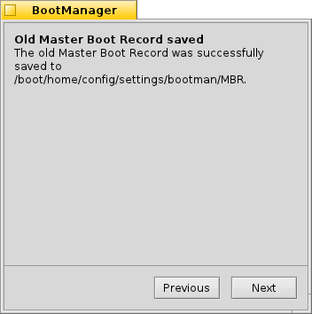
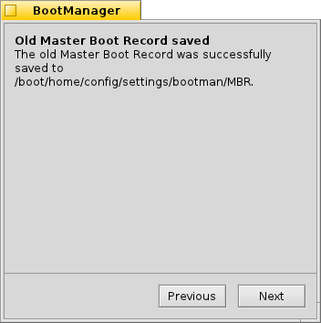

Slovenčina
Slovenčina Català
Català Deutsch
Deutsch English
English Español
Español Français
Français Italiano
Italiano Magyar
Magyar Polski
Polski Português
Português Português (Brazil)
Português (Brazil) Română
Română Suomi
Suomi Svenska
Svenska 中文 ［中文］
中文 ［中文］ Русский
Русский Українська
Українська 日本語
日本語 Správca zavádzania
Správca zavádzania
| Panel: | Žiadny záznam, zvyčajne sa spúšťa z menu Inštalátora | |
| Umiestnenie: | /boot/system/apps/BootManager | |
| Nastavenia: | žiadne Zálohy MBR sa štandardne ukladajú do ~/config/settings/bootman/ |
Ak nepridáte oblasť Haiku do existujúceho správcu zavádzania ako GRUB, Správca zavádzania Haiku môže nainštalovať malé zavádzacie menu do MBR (Master Boot Record), ktoré vyzerá takto:

Správca zavádzania vás riadi počas celého inštalačného procesu zavádzacieho menu.
 Výber cieľového disku
Výber cieľového disku

Správca zavádzania vás privíta zoznamom dostupných jednotiek, z ktorých si vyberiete cieľovú jednotku. Ak sa na tejto jednotke už nachádza menu zavádzania, bude dostupné tlačidlo , ktoré vás prevedie jednoduchým procesom obnovenia predtým zálohovaného MBR, čím sa odstráni menu zavádzania.
Inak pokračujte stlačením tlačidla .
Zálohovanie Master Boot Record (MBR)
V prípade, že sa niečo pokazí alebo len budete chcieť znova odstrániť menu zavádzania, Master Boot Record (MBR) je teraz uložený. Toto je očividne veľmi dôležitý krok - uistite sa, že náhodou napríklad neprepíšete nejakú inú zálohu MBR z niektorých predchádzajúcich experimentov.
 

Iba vyberte cieľ pre záložný súbor „MBR“ alebo nechajte predvolenú cestu. Po stlačení tlačidla dostanete potvrdenie o tom, či sa záloha podarila.
Konfigurácia menu zavádzania


Ďalej vám bude predložený zoznam oblastí na jednotke destinácie. Zaškrtávaním určujete, ktoré položky sa objavia v menu zavádzania, textové políčka vám umožňujú položky premenovať.
Potom si z rozbaľovacieho menu vyberiete, z ktorej diskovej oblasti chcete predvolene zavádzať a nastavíte časovač posuvníkom nižšie. „Okamžite“ znamená, že menu zavádzania bude vynechané, „Nikdy“ menu zavádzania zastaví. Časovač môžete počas zavádzania preskočiť držaním klávesu ALT.
Zapísanie menu zavádzania


Predtým, ako sa menu zavádzania zapíše do MBR, sa zobrazí zhrnutie vašej konfigurácie a poslednú šancu na zrušenie operácie. Nebojte sa ale, pokiaľ je záloha MBR v bezpečí, môžete jednoducho zvrátiť všetky zmeny. Ak by nastal vážnejší problém, môžete stále zavádzať Haiku z inštalačného CD alebo USB flash disku a znova zapísať MBR zálohu pomocou Správcu zavádzania.